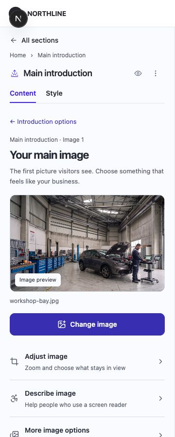
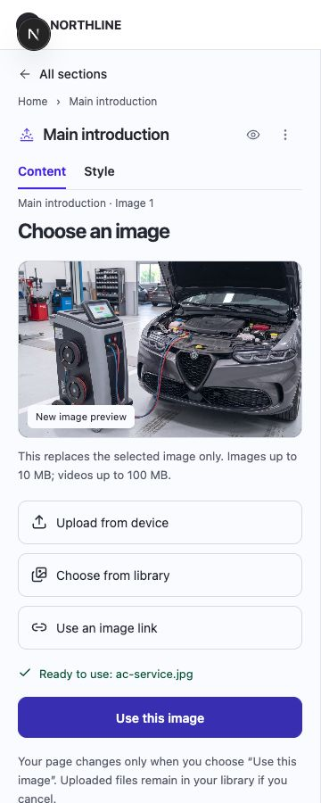
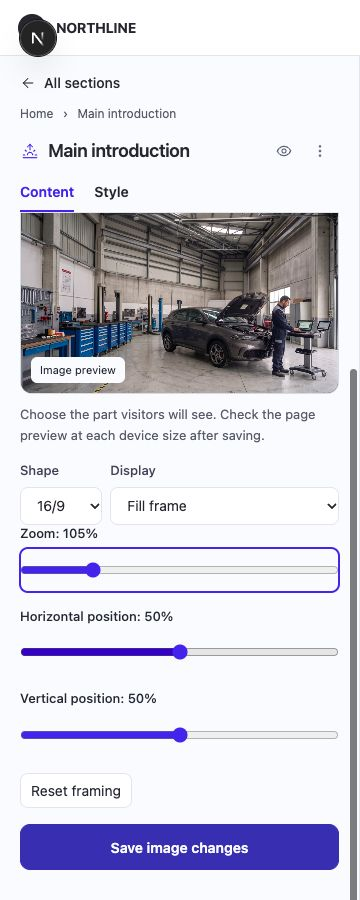
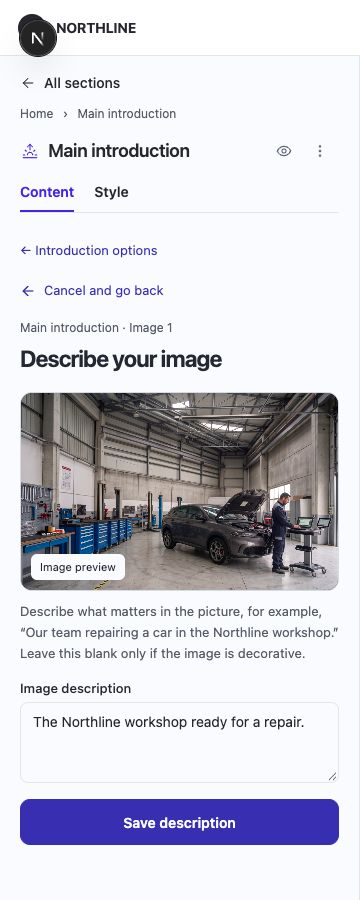
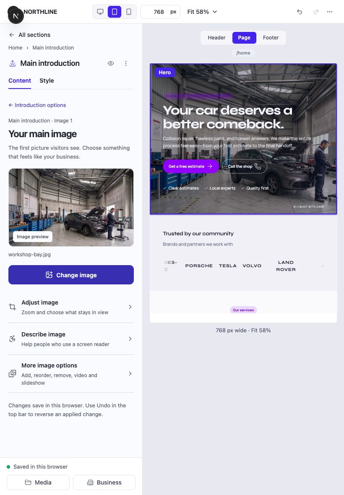
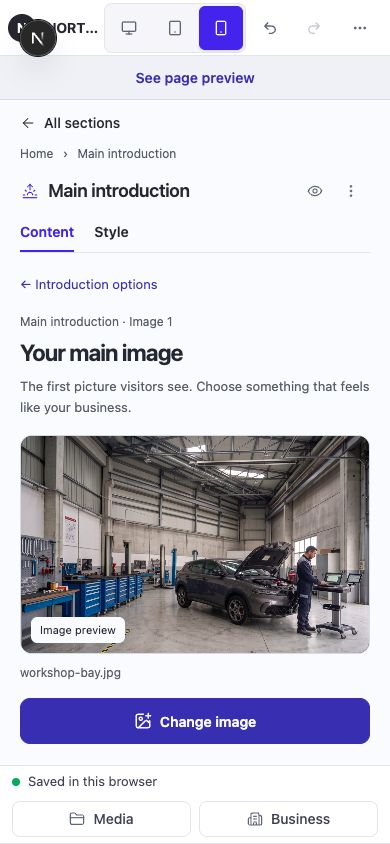
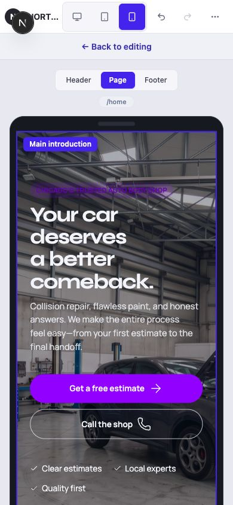

Approved follow-up / Images 2–9
Shared controls, working actions.
Native dropdown appearance is unchanged. The approved follow-up now includes shared upload controls, a working contrast comparison and Apply action, website-page destinations, consistent Back navigation, full thumbnails, concern badge icons and responsive library records.
Story now has Background and Story video controls. Media selection updates the live introduction and saves through the existing workspace. Thumbnails fill their space, video previews show the actual clip, and task labels are shorter.
The approved Header redesign is implemented: flat menu rows, compact action menus, live labels, and drag ordering/nesting. Choose media now uses the smaller reference layout and shows Apply only after selection.
Inspect the updated editor ↗


01 / Understand the whole editor
Four readable groups, one page context.
These are the editor's existing section groups. Select a section below to inspect every declared layout and its content panels. Arrows describe navigation; they are not claims of a completed redesign outside the first journey.
Group 1
Make a first impression
Current page → Sections
HeaderContent → Menus · Menu placement · Business name · LogoStyle → 3 layouts + section controlsMain introduction (Hero)Content → Headline & text · Action buttons · Reasons to trust you · Main image & video · Customer rating · Your business in numbers · Story videoStyle → 5 layouts + section controlsPartner logosContent → Message · LogosStyle → 3 layouts + section controlsServicesContent → Introduction · ServicesStyle → 3 layouts + section controls↩ All sections returns to this page
Group 2
Explain your value
Current page → Sections
Why choose usContent → Message · Promises · Media · Action buttons · Numbers · Person 1 · Person 2 · Person 3 · More people · LinksStyle → 3 layouts + section controlsAbout & galleryContent → Message · GalleryStyle → 3 layouts + section controlsCustomer concernsContent → Message · Promise · Moving deadlines · Estimate creep · Flawed finishes · Action buttonsStyle → 2 layouts + section controlsOur processContent → Message · Tell us what happened · Receive your estimate · Approve the plan · We complete the repair · Drive away confidently · Labels · Facts · Before image · After imageStyle → 2 layouts + section controls↩ All sections returns to this page
Group 3
Build confidence
Current page → Sections
Trust signalsContent → Message · Experienced team · Clear estimates · Quality checks · MediaStyle → 3 layouts + section controlsReviewsContent → Message · Customer reviewStyle → 3 layouts + section controlsQuote requestContent → Wording · Name · Phone or email · What do you need? · ImageStyle → 1 layouts + section controlsFAQContent → Message · How do I get started? · How long will repairs take? · Do you provide written estimates? · Action buttonsStyle → 2 layouts + section controls↩ All sections returns to this page
Group 4
Invite action
Current page → Sections
PromotionContent → Message · Offer · Background · Action buttonsStyle → 1 layouts + section controlsContactContent → Message · Contact details · Map image · Action buttonsStyle → 1 layouts + section controlsFinal call to actionContent → Message · Image · Action buttonsStyle → 2 layouts + section controlsFooterContent → NORTHLINE · Explore · Get in touch · Copyright · ImageStyle → 2 layouts + section controls↩ All sections returns to this page
Shared routes: Media → Library → usage → owning section. Business/Settings → Business details, Website brand, Profile, Plan & billing, AI usage → Save/Cancel/Close. Page settings → Page / Navigation / SEO. Toolbar → devices, zoom, Undo/Redo, live preview and export. See the shared-screen inventory in the audit below.
02 / Review the implemented journey
Change my main image.
Actual application captures, shown as readable panel crops. Open any image at full size. The clickable prototype is the working editor linked above; these captures document its connected screens.
1 · Your main image
Selection, main action, crop, description and advanced options.

2 · Choose a replacement
Upload, library or link. Preview before applying.

3 · Adjust the framing
Try zoom and position; save or cancel the draft.

4 · Describe the image
Plain guidance and a deliberate save action.



Upload disables competing choices and announces “Adding your image to the library…”. File validation errors retain the current image. This example describes the transient state; it is not a captured network upload.
A selected image has an outline and a number. “Use this image” applies a draft; the footer separately reports browser saving. Cancel leaves the page unchanged.
03 / Inspect the actual screens
Inventory by section and layout.
Each expandable section includes purpose, entry, actions and return paths. Repeated item panels depend on the saved content. The generated inventory uses starter data; the audit documents additional collection and conditional screens.
Header3 layouts · 4 content panel types
Help visitors find their way.
Enter: Pages → choose page → Sections → Header (or click its preview)
Return: All sections → same page; Content/Style keeps the section selected
Nested screens, tabs and disclosures
| Screen | Purpose | Entry | Actions | Return |
|---|---|---|---|---|
| Your menus | Manage named reusable menus | Header → Content → Menus | Select; create; rename; duplicate; delete menu | Introduction: Back within menus; All sections |
| Menu items | Manage links in a selected menu | Your menus → named menu | Add item; edit; up/down; reorder; submenu parent; overflow duplicate/delete | Back to Your menus |
| Edit menu item | Choose wording and destination | Menu items → item | Text; icon; page/custom destination; parent; save; cancel | Back to selected menu items |
| Create menu | Add a reusable named menu | Your menus → Create menu | Name; create; cancel | Back to Your menus |
| Rename menu | Change a menu name | Menu overflow → Rename | Draft name; save; cancel | Your menus |
| Menu placement | Choose which menu appears at the top/bottom | Header → Content → Menu placement | Assign menu to header and footer | Collapse group / All sections |
standard
| Screen / panel | Purpose | Entry | Actions | Return |
|---|---|---|---|---|
| Menusmenus | Create or select a named menu | Header → Content → Menus | Edit fields and choices shown for this layout; section-specific actions documented in discovery.md | Collapse group to Content options; All sections returns to the same page |
| Menu placementplacement | Assign menus to Header and Footer | Header → Content → Menu placement | Edit fields and choices shown for this layout; section-specific actions documented in discovery.md | Collapse group to Content options; All sections returns to the same page |
| Business namename | The business name in the header. It is shared by every page. | Header → Content → Business name | Edit fields and choices shown for this layout; section-specific actions documented in discovery.md | Collapse group to Content options; All sections returns to the same page |
| Logologo | Optional mark beside the name | Header → Content → Logo | Edit fields and choices shown for this layout; section-specific actions documented in discovery.md | Collapse group to Content options; All sections returns to the same page |
| Style | Change the appearance of this section | Header → Style | Choose standard, section-specific layout controls, spacing and typography. See the audit for conditional controls. | Content tab or All sections |
pill
| Screen / panel | Purpose | Entry | Actions | Return |
|---|---|---|---|---|
| Menusmenus | Create or select a named menu | Header → Content → Menus | Edit fields and choices shown for this layout; section-specific actions documented in discovery.md | Collapse group to Content options; All sections returns to the same page |
| Menu placementplacement | Assign menus to Header and Footer | Header → Content → Menu placement | Edit fields and choices shown for this layout; section-specific actions documented in discovery.md | Collapse group to Content options; All sections returns to the same page |
| Business namename | The business name in the header. It is shared by every page. | Header → Content → Business name | Edit fields and choices shown for this layout; section-specific actions documented in discovery.md | Collapse group to Content options; All sections returns to the same page |
| Logologo | Optional mark beside the name | Header → Content → Logo | Edit fields and choices shown for this layout; section-specific actions documented in discovery.md | Collapse group to Content options; All sections returns to the same page |
| Style | Change the appearance of this section | Header → Style | Choose pill, section-specific layout controls, spacing and typography. See the audit for conditional controls. | Content tab or All sections |
rounded
| Screen / panel | Purpose | Entry | Actions | Return |
|---|---|---|---|---|
| Menusmenus | Create or select a named menu | Header → Content → Menus | Edit fields and choices shown for this layout; section-specific actions documented in discovery.md | Collapse group to Content options; All sections returns to the same page |
| Menu placementplacement | Assign menus to Header and Footer | Header → Content → Menu placement | Edit fields and choices shown for this layout; section-specific actions documented in discovery.md | Collapse group to Content options; All sections returns to the same page |
| Business namename | The business name in the header. It is shared by every page. | Header → Content → Business name | Edit fields and choices shown for this layout; section-specific actions documented in discovery.md | Collapse group to Content options; All sections returns to the same page |
| Logologo | Optional mark beside the name | Header → Content → Logo | Edit fields and choices shown for this layout; section-specific actions documented in discovery.md | Collapse group to Content options; All sections returns to the same page |
| Style | Change the appearance of this section | Header → Style | Choose rounded, section-specific layout controls, spacing and typography. See the audit for conditional controls. | Content tab or All sections |
Main introduction (Hero)5 layouts · 7 content panel types
Say what you offer and why it matters.
Enter: Pages → choose page → Sections → Hero (or click its preview)
Return: All sections → same page; Content/Style keeps the section selected
Nested screens, tabs and disclosures
| Screen | Purpose | Entry | Actions | Return |
|---|---|---|---|---|
| Your main image | See selection and choose a task | Change my main image / Main image & video | Select thumbnail; Change image; Adjust; Describe; More options | Introduction options → All sections |
| Choose an image | Stage one replacement | Your main image → Change image | Upload; library; direct link; preview; Use this image; cancel | Your main image |
| Image-link form | Preview a direct media address | Choose an image → Use an image link | Enter URL; validation; preview | Choose an image |
| Adjust your image | Stage framing changes | Your main image → Adjust image | Shape; fill/fit; zoom; position; reset; save; cancel | Your main image |
| Describe your image | Stage screen-reader description | Your main image → Describe image | Description; Save description; cancel | Your main image |
| Unapplied-edit warning | Protect the active draft | Dirty task → section/style/library/business/toolbar/region exit | Keep editing; Discard changes and continue | Current task or requested destination |
| More image options | Retain full existing collection behavior | Your main image → More image options | Add/upload/link/library; select; reorder; remove/undo; 3-item add limit; keep legacy overflow | Your main image |
| Link & accessibility | Image label and description | More image options → Link & accessibility | Label except Story; description; disabled without media | Collapse disclosure |
| Overlay | Keep text readable over the image | More image options → Overlay | None/solid/bottom; color/darkness/coverage; readability preset | Collapse disclosure |
| Slideshow | Choose how the collection advances | More image options → Slideshow (at least two items) | Play; image duration; timer/end of clip; transition fade | Collapse disclosure |
| Framing | Choose crop, zoom and position | More image options → Framing / Details | Shape; fill/fit; zoom; horizontal/vertical position; reset | Collapse disclosure / parent screen |
| Accessibility | Make media understandable without seeing it | More image options → Accessibility | Alternative text; video captions and language when supported | Collapse disclosure / parent screen |
| Video settings | Control video behavior | More image options → Selected video → Video settings | Muted; loop; autoplay; poster chooser; mobile fallback where supported | Collapse disclosure / parent screen |
split
| Screen / panel | Purpose | Entry | Actions | Return |
|---|---|---|---|---|
| Headline & textmessage | Introduction, headline, and description | Hero → Content → Headline & text | Edit fields and choices shown for this layout; section-specific actions documented in discovery.md | Collapse group to Content options; All sections returns to the same page |
| Action buttonsbuttons | Edit visitor action text, icon, and destination | Hero → Content → Action buttons | Edit fields and choices shown for this layout; section-specific actions documented in discovery.md | Collapse group to Content options; All sections returns to the same page |
| Reasons to trust youtrust | Edit up to three short highlights | Hero → Content → Reasons to trust you | Edit fields and choices shown for this layout; section-specific actions documented in discovery.md | Collapse group to Content options; All sections returns to the same page |
| Main image & videomedia | 1 item | Hero → Content → Main image & video | Change image; choose upload/library/link; preview; apply/cancel; framing; description; advanced collection options | Collapse group to Content options; All sections returns to the same page |
| Customer ratingrating | Show or hide the rating and edit its score, count, and destination | Hero → Content → Customer rating | Edit fields and choices shown for this layout; section-specific actions documented in discovery.md | Collapse group to Content options; All sections returns to the same page |
| Style | Change the appearance of this section | Hero → Style | Choose split, section-specific layout controls, spacing and typography. See the audit for conditional controls. | Content tab or All sections |
center
| Screen / panel | Purpose | Entry | Actions | Return |
|---|---|---|---|---|
| Headline & textmessage | Introduction, headline, and description | Hero → Content → Headline & text | Edit fields and choices shown for this layout; section-specific actions documented in discovery.md | Collapse group to Content options; All sections returns to the same page |
| Action buttonsbuttons | Edit visitor action text, icon, and destination | Hero → Content → Action buttons | Edit fields and choices shown for this layout; section-specific actions documented in discovery.md | Collapse group to Content options; All sections returns to the same page |
| Reasons to trust youtrust | Edit up to three short highlights | Hero → Content → Reasons to trust you | Edit fields and choices shown for this layout; section-specific actions documented in discovery.md | Collapse group to Content options; All sections returns to the same page |
| Main image & videomedia | 1 item | Hero → Content → Main image & video | Change image; choose upload/library/link; preview; apply/cancel; framing; description; advanced collection options | Collapse group to Content options; All sections returns to the same page |
| Customer ratingrating | Show or hide the rating and edit its score, count, and destination | Hero → Content → Customer rating | Edit fields and choices shown for this layout; section-specific actions documented in discovery.md | Collapse group to Content options; All sections returns to the same page |
| Style | Change the appearance of this section | Hero → Style | Choose center, section-specific layout controls, spacing and typography. See the audit for conditional controls. | Content tab or All sections |
image
| Screen / panel | Purpose | Entry | Actions | Return |
|---|---|---|---|---|
| Headline & textmessage | Introduction, headline, and description | Hero → Content → Headline & text | Edit fields and choices shown for this layout; section-specific actions documented in discovery.md | Collapse group to Content options; All sections returns to the same page |
| Action buttonsbuttons | Edit visitor action text, icon, and destination | Hero → Content → Action buttons | Edit fields and choices shown for this layout; section-specific actions documented in discovery.md | Collapse group to Content options; All sections returns to the same page |
| Reasons to trust youtrust | Edit up to three short highlights | Hero → Content → Reasons to trust you | Edit fields and choices shown for this layout; section-specific actions documented in discovery.md | Collapse group to Content options; All sections returns to the same page |
| Main image & videomedia | 1 item | Hero → Content → Main image & video | Change image; choose upload/library/link; preview; apply/cancel; framing; description; advanced collection options | Collapse group to Content options; All sections returns to the same page |
| Customer ratingrating | Show or hide the rating and edit its score, count, and destination | Hero → Content → Customer rating | Edit fields and choices shown for this layout; section-specific actions documented in discovery.md | Collapse group to Content options; All sections returns to the same page |
| Style | Change the appearance of this section | Hero → Style | Choose image, section-specific layout controls, spacing and typography. See the audit for conditional controls. | Content tab or All sections |
short
| Screen / panel | Purpose | Entry | Actions | Return |
|---|---|---|---|---|
| Headline & textmessage | Introduction, headline, and description | Hero → Content → Headline & text | Edit fields and choices shown for this layout; section-specific actions documented in discovery.md | Collapse group to Content options; All sections returns to the same page |
| Action buttonsbuttons | Edit visitor action text, icon, and destination | Hero → Content → Action buttons | Edit fields and choices shown for this layout; section-specific actions documented in discovery.md | Collapse group to Content options; All sections returns to the same page |
| Reasons to trust youtrust | Edit up to three short highlights | Hero → Content → Reasons to trust you | Edit fields and choices shown for this layout; section-specific actions documented in discovery.md | Collapse group to Content options; All sections returns to the same page |
| Main image & videomedia | 1 item | Hero → Content → Main image & video | Change image; choose upload/library/link; preview; apply/cancel; framing; description; advanced collection options | Collapse group to Content options; All sections returns to the same page |
| Customer ratingrating | Show or hide the rating and edit its score, count, and destination | Hero → Content → Customer rating | Edit fields and choices shown for this layout; section-specific actions documented in discovery.md | Collapse group to Content options; All sections returns to the same page |
| Style | Change the appearance of this section | Hero → Style | Choose short, section-specific layout controls, spacing and typography. See the audit for conditional controls. | Content tab or All sections |
story
| Screen / panel | Purpose | Entry | Actions | Return |
|---|---|---|---|---|
| Headline & textmessage | Introduction, headline, and description | Hero → Content → Headline & text | Edit fields and choices shown for this layout; section-specific actions documented in discovery.md | Collapse group to Content options; All sections returns to the same page |
| Action buttonsbuttons | Edit visitor action text, icon, and destination | Hero → Content → Action buttons | Edit fields and choices shown for this layout; section-specific actions documented in discovery.md | Collapse group to Content options; All sections returns to the same page |
| Reasons to trust youtrust | Edit up to three short highlights | Hero → Content → Reasons to trust you | Edit fields and choices shown for this layout; section-specific actions documented in discovery.md | Collapse group to Content options; All sections returns to the same page |
| Your business in numbersstatistics | Edit three business numbers and labels | Hero → Content → Your business in numbers | Edit fields and choices shown for this layout; section-specific actions documented in discovery.md | Collapse group to Content options; All sections returns to the same page |
| Main image & videomedia | 1 item | Hero → Content → Main image & video | Change image; choose upload/library/link; preview; apply/cancel; framing; description; advanced collection options | Collapse group to Content options; All sections returns to the same page |
| Story videostory | Plays when someone uses the story button | Hero → Content → Story video | Edit fields and choices shown for this layout; section-specific actions documented in discovery.md | Collapse group to Content options; All sections returns to the same page |
| Customer ratingrating | Show or hide the rating and edit its score, count, and destination | Hero → Content → Customer rating | Edit fields and choices shown for this layout; section-specific actions documented in discovery.md | Collapse group to Content options; All sections returns to the same page |
| Style | Change the appearance of this section | Hero → Style | Choose story, section-specific layout controls, spacing and typography. See the audit for conditional controls. | Content tab or All sections |
Partner logos3 layouts · 2 content panel types
Show the partners people recognize.
Enter: Pages → choose page → Sections → Partner logos (or click its preview)
Return: All sections → same page; Content/Style keeps the section selected
Nested screens, tabs and disclosures
| Screen | Purpose | Entry | Actions | Return |
|---|---|---|---|---|
| Logo collection | Manage reusable partner logos | Partner logos → Content → Logos | Upload; link; library; select; reorder; remove/undo | Collapse Logos |
| Selected logo | Edit one logo and destination | Logo collection → thumbnail | Replace; text/name; link; logo sizing/category disclosure | Logo collection |
| Style: Layout | Adjust layout for this section | logos → Style → Layout | Existing section-specific controls; changes apply immediately | Another Style group / Content / All sections |
| Style: Logo sizing | Adjust logo sizing for this section | logos → Style → Logo sizing | Existing section-specific controls; changes apply immediately | Another Style group / Content / All sections |
| Style: Spacing | Adjust spacing for this section | logos → Style → Spacing | Existing section-specific controls; changes apply immediately | Another Style group / Content / All sections |
| Style: Typography | Adjust typography for this section | logos → Style → Typography | Existing section-specific controls; changes apply immediately | Another Style group / Content / All sections |
Scrolling row
| Screen / panel | Purpose | Entry | Actions | Return |
|---|---|---|---|---|
| Messagemessage | Small label, headline, and description | Partner logos → Content → Message | Edit fields and choices shown for this layout; section-specific actions documented in discovery.md | Collapse group to Content options; All sections returns to the same page |
| Logoslogos | 7 items | Partner logos → Content → Logos | Edit fields and choices shown for this layout; section-specific actions documented in discovery.md | Collapse group to Content options; All sections returns to the same page |
| Style | Change the appearance of this section | Partner logos → Style | Choose Scrolling row, section-specific layout controls, spacing and typography. See the audit for conditional controls. | Content tab or All sections |
Still row
| Screen / panel | Purpose | Entry | Actions | Return |
|---|---|---|---|---|
| Messagemessage | Small label, headline, and description | Partner logos → Content → Message | Edit fields and choices shown for this layout; section-specific actions documented in discovery.md | Collapse group to Content options; All sections returns to the same page |
| Logoslogos | 7 items | Partner logos → Content → Logos | Edit fields and choices shown for this layout; section-specific actions documented in discovery.md | Collapse group to Content options; All sections returns to the same page |
| Style | Change the appearance of this section | Partner logos → Style | Choose Still row, section-specific layout controls, spacing and typography. See the audit for conditional controls. | Content tab or All sections |
Heading and slider
| Screen / panel | Purpose | Entry | Actions | Return |
|---|---|---|---|---|
| Messagemessage | Small label, headline, and description | Partner logos → Content → Message | Edit fields and choices shown for this layout; section-specific actions documented in discovery.md | Collapse group to Content options; All sections returns to the same page |
| Logoslogos | 7 items | Partner logos → Content → Logos | Edit fields and choices shown for this layout; section-specific actions documented in discovery.md | Collapse group to Content options; All sections returns to the same page |
| Style | Change the appearance of this section | Partner logos → Style | Choose Heading and slider, section-specific layout controls, spacing and typography. See the audit for conditional controls. | Content tab or All sections |
Services3 layouts · 2 content panel types
Explain the products or services you offer.
Enter: Pages → choose page → Sections → Services (or click its preview)
Return: All sections → same page; Content/Style keeps the section selected
Nested screens, tabs and disclosures
| Screen | Purpose | Entry | Actions | Return |
|---|---|---|---|---|
| Services list | Manage offered services | Services → Content → Services | Select; Add service; show more; duplicate; hide; delete/undo; reorder | Collapse Services |
| Service details | Edit the selected offering | Services list → item → Details | Title; description; price; alternate link; linked page | Services list or Media tab |
| Service media | Choose an icon or image/video | Services list → item → Media | Icon/image-video choice; upload/replace/link/library; remove | Details tab / Services list |
| Other link | Override the generated service-page destination | Details → Other link | Phone; email; website; clear override | Collapse disclosure / Details |
| Linked service page | Edit content beyond the service card | Details → Edit this page | Existing page section tools; page settings can jump back to owning service | Page settings → Edit service / Pages |
| Read-only synced list | Show source ownership on generated catalog pages | Generated service catalog → Services | Inspect entries; explanation that Home owns the list | Edit source from Home / Pages |
| Framing | Choose crop, zoom and position | Service media → Framing / Details | Shape; fill/fit; zoom; horizontal/vertical position; reset | Collapse disclosure / parent screen |
| Accessibility | Make media understandable without seeing it | Service media → Accessibility | Alternative text; video captions and language when supported | Collapse disclosure / parent screen |
| Video settings | Control video behavior | Service media → Selected video → Video settings | Muted; loop; autoplay; poster chooser; mobile fallback where supported | Collapse disclosure / parent screen |
| Style: Layout | Adjust layout for this section | services → Style → Layout | Existing section-specific controls; changes apply immediately | Another Style group / Content / All sections |
| Style: Spacing | Adjust spacing for this section | services → Style → Spacing | Existing section-specific controls; changes apply immediately | Another Style group / Content / All sections |
| Style: Typography | Adjust typography for this section | services → Style → Typography | Existing section-specific controls; changes apply immediately | Another Style group / Content / All sections |
| Style: Card appearance | Adjust card appearance for this section | services → Style → Card appearance | Existing section-specific controls; changes apply immediately | Another Style group / Content / All sections |
Icon cards
| Screen / panel | Purpose | Entry | Actions | Return |
|---|---|---|---|---|
| Introductionintro | Headline and the card link | Services → Content → Introduction | Edit fields and choices shown for this layout; section-specific actions documented in discovery.md | Collapse group to Content options; All sections returns to the same page |
| Servicesservices | 11 items | Services → Content → Services | Edit fields and choices shown for this layout; section-specific actions documented in discovery.md | Collapse group to Content options; All sections returns to the same page |
| Style | Change the appearance of this section | Services → Style | Choose Icon cards, section-specific layout controls, spacing and typography. See the audit for conditional controls. | Content tab or All sections |
Photo cards
| Screen / panel | Purpose | Entry | Actions | Return |
|---|---|---|---|---|
| Introductionintro | Headline and the note beside it | Services → Content → Introduction | Edit fields and choices shown for this layout; section-specific actions documented in discovery.md | Collapse group to Content options; All sections returns to the same page |
| Servicesservices | 11 items | Services → Content → Services | Edit fields and choices shown for this layout; section-specific actions documented in discovery.md | Collapse group to Content options; All sections returns to the same page |
| Style | Change the appearance of this section | Services → Style | Choose Photo cards, section-specific layout controls, spacing and typography. See the audit for conditional controls. | Content tab or All sections |
Price list
| Screen / panel | Purpose | Entry | Actions | Return |
|---|---|---|---|---|
| Introductionintro | Headline and the card link | Services → Content → Introduction | Edit fields and choices shown for this layout; section-specific actions documented in discovery.md | Collapse group to Content options; All sections returns to the same page |
| Servicesservices | 11 items | Services → Content → Services | Edit fields and choices shown for this layout; section-specific actions documented in discovery.md | Collapse group to Content options; All sections returns to the same page |
| Style | Change the appearance of this section | Services → Style | Choose Price list, section-specific layout controls, spacing and typography. See the audit for conditional controls. | Content tab or All sections |
Why choose us3 layouts · 10 content panel types
Give people a reason to choose you.
Enter: Pages → choose page → Sections → Why choose us (or click its preview)
Return: All sections → same page; Content/Style keeps the section selected
Nested screens, tabs and disclosures
| Screen | Purpose | Entry | Actions | Return |
|---|---|---|---|---|
| Precise widths | Tune column proportions | Style → Layout → Custom balance / precise widths | Percent widths; supported arrangements | Collapse widths → Layout |
| Style: Layout | Adjust layout for this section | proof → Style → Layout | Existing section-specific controls; changes apply immediately | Another Style group / Content / All sections |
| Style: Spacing | Adjust spacing for this section | proof → Style → Spacing | Existing section-specific controls; changes apply immediately | Another Style group / Content / All sections |
| Style: Typography | Adjust typography for this section | proof → Style → Typography | Existing section-specific controls; changes apply immediately | Another Style group / Content / All sections |
Text and photo
| Screen / panel | Purpose | Entry | Actions | Return |
|---|---|---|---|---|
| Messagemessage | Edit message | Why choose us → Content → Message | Edit fields and choices shown for this layout; section-specific actions documented in discovery.md | Collapse group to Content options; All sections returns to the same page |
| Promisespromises | Edit three reasons to choose the business | Why choose us → Content → Promises | Edit fields and choices shown for this layout; section-specific actions documented in discovery.md | Collapse group to Content options; All sections returns to the same page |
| Mediaphoto | Manage section image or video | Why choose us → Content → Media | Edit fields and choices shown for this layout; section-specific actions documented in discovery.md | Collapse group to Content options; All sections returns to the same page |
| Action buttonsbuttons | Edit visitor action text, icon, and destination | Why choose us → Content → Action buttons | Edit fields and choices shown for this layout; section-specific actions documented in discovery.md | Collapse group to Content options; All sections returns to the same page |
| Style | Change the appearance of this section | Why choose us → Style | Choose Text and photo, section-specific layout controls, spacing and typography. See the audit for conditional controls. | Content tab or All sections |
Promise band
| Screen / panel | Purpose | Entry | Actions | Return |
|---|---|---|---|---|
| Messagemessage | Edit message | Why choose us → Content → Message | Edit fields and choices shown for this layout; section-specific actions documented in discovery.md | Collapse group to Content options; All sections returns to the same page |
| Promisespromises | Edit three reasons to choose the business | Why choose us → Content → Promises | Edit fields and choices shown for this layout; section-specific actions documented in discovery.md | Collapse group to Content options; All sections returns to the same page |
| Mediaphoto | Manage section image or video | Why choose us → Content → Media | Edit fields and choices shown for this layout; section-specific actions documented in discovery.md | Collapse group to Content options; All sections returns to the same page |
| Action buttonsbuttons | Edit visitor action text, icon, and destination | Why choose us → Content → Action buttons | Edit fields and choices shown for this layout; section-specific actions documented in discovery.md | Collapse group to Content options; All sections returns to the same page |
| Style | Change the appearance of this section | Why choose us → Style | Choose Promise band, section-specific layout controls, spacing and typography. See the audit for conditional controls. | Content tab or All sections |
Photo and reasons
| Screen / panel | Purpose | Entry | Actions | Return |
|---|---|---|---|---|
| Messagemessage | Introduction, headline, and description | Why choose us → Content → Message | Edit fields and choices shown for this layout; section-specific actions documented in discovery.md | Collapse group to Content options; All sections returns to the same page |
| Numbersstats | Two numbers on the photo | Why choose us → Content → Numbers | Edit fields and choices shown for this layout; section-specific actions documented in discovery.md | Collapse group to Content options; All sections returns to the same page |
| Person 1avatar:0 | Name and optional photo | Why choose us → Content → Person 1 | Edit fields and choices shown for this layout; section-specific actions documented in discovery.md | Collapse group to Content options; All sections returns to the same page |
| Person 2avatar:1 | Name and optional photo | Why choose us → Content → Person 2 | Edit fields and choices shown for this layout; section-specific actions documented in discovery.md | Collapse group to Content options; All sections returns to the same page |
| Person 3avatar:2 | Name and optional photo | Why choose us → Content → Person 3 | Edit fields and choices shown for this layout; section-specific actions documented in discovery.md | Collapse group to Content options; All sections returns to the same page |
| More peoplemore | Extra count beside the names | Why choose us → Content → More people | Edit fields and choices shown for this layout; section-specific actions documented in discovery.md | Collapse group to Content options; All sections returns to the same page |
| Linkslinks | A button and a text link | Why choose us → Content → Links | Edit fields and choices shown for this layout; section-specific actions documented in discovery.md | Collapse group to Content options; All sections returns to the same page |
| Mediaphoto | Manage section image or video | Why choose us → Content → Media | Edit fields and choices shown for this layout; section-specific actions documented in discovery.md | Collapse group to Content options; All sections returns to the same page |
| Style | Change the appearance of this section | Why choose us → Style | Choose Photo and reasons, section-specific layout controls, spacing and typography. See the audit for conditional controls. | Content tab or All sections |
About & gallery3 layouts · 2 content panel types
Introduce your business through words and photos.
Enter: Pages → choose page → Sections → About & gallery (or click its preview)
Return: All sections → same page; Content/Style keeps the section selected
Nested screens, tabs and disclosures
| Screen | Purpose | Entry | Actions | Return |
|---|---|---|---|---|
| Gallery collection | Manage photos and videos | About & gallery → Gallery | Upload/link/library; select; show more; reorder; remove/undo | Collapse Gallery |
| Selected gallery item details | Edit image copy and crop | Gallery → selected item → Details | Title; description; caption; framing; replace | Gallery collection |
| Categories | Organize the preview filter pills | Gallery → selected item → Categories | Category; All photos label | Collapse disclosure / Gallery |
| Framing | Choose crop, zoom and position | Selected gallery item → Framing / Details | Shape; fill/fit; zoom; horizontal/vertical position; reset | Collapse disclosure / parent screen |
| Accessibility | Make media understandable without seeing it | Selected gallery item → Accessibility | Alternative text; video captions and language when supported | Collapse disclosure / parent screen |
| Video settings | Control video behavior | Selected gallery item → Selected video → Video settings | Muted; loop; autoplay; poster chooser; mobile fallback where supported | Collapse disclosure / parent screen |
| Style: Layout | Adjust layout for this section | about → Style → Layout | Existing section-specific controls; changes apply immediately | Another Style group / Content / All sections |
| Style: Spacing | Adjust spacing for this section | about → Style → Spacing | Existing section-specific controls; changes apply immediately | Another Style group / Content / All sections |
| Style: Typography | Adjust typography for this section | about → Style → Typography | Existing section-specific controls; changes apply immediately | Another Style group / Content / All sections |
Story and photos
| Screen / panel | Purpose | Entry | Actions | Return |
|---|---|---|---|---|
| Messagemessage | Introduction, headline, and description | About & gallery → Content → Message | Edit fields and choices shown for this layout; section-specific actions documented in discovery.md | Collapse group to Content options; All sections returns to the same page |
| Gallerygallery | 10 items | About & gallery → Content → Gallery | Edit fields and choices shown for this layout; section-specific actions documented in discovery.md | Collapse group to Content options; All sections returns to the same page |
| Style | Change the appearance of this section | About & gallery → Style | Choose Story and photos, section-specific layout controls, spacing and typography. See the audit for conditional controls. | Content tab or All sections |
Photos only
| Screen / panel | Purpose | Entry | Actions | Return |
|---|---|---|---|---|
| Gallerygallery | 10 items | About & gallery → Content → Gallery | Edit fields and choices shown for this layout; section-specific actions documented in discovery.md | Collapse group to Content options; All sections returns to the same page |
| Style | Change the appearance of this section | About & gallery → Style | Choose Photos only, section-specific layout controls, spacing and typography. See the audit for conditional controls. | Content tab or All sections |
Sliding gallery
| Screen / panel | Purpose | Entry | Actions | Return |
|---|---|---|---|---|
| Messagemessage | Introduction, headline, and description | About & gallery → Content → Message | Edit fields and choices shown for this layout; section-specific actions documented in discovery.md | Collapse group to Content options; All sections returns to the same page |
| Gallerygallery | 10 items | About & gallery → Content → Gallery | Edit fields and choices shown for this layout; section-specific actions documented in discovery.md | Collapse group to Content options; All sections returns to the same page |
| Style | Change the appearance of this section | About & gallery → Style | Choose Sliding gallery, section-specific layout controls, spacing and typography. See the audit for conditional controls. | Content tab or All sections |
Customer concerns2 layouts · 6 content panel types
Address what might hold someone back.
Enter: Pages → choose page → Sections → Customer concerns (or click its preview)
Return: All sections → same page; Content/Style keeps the section selected
Photo cards
| Screen / panel | Purpose | Entry | Actions | Return |
|---|---|---|---|---|
| Messagemessage | Introduction, headline, and description | Customer concerns → Content → Message | Edit fields and choices shown for this layout; section-specific actions documented in discovery.md | Collapse group to Content options; All sections returns to the same page |
| Promisepromise | The sentence with the concerns | Customer concerns → Content → Promise | Edit fields and choices shown for this layout; section-specific actions documented in discovery.md | Collapse group to Content options; All sections returns to the same page |
| Moving deadlinesitem:0 | Title, description, tag, icon, and photo | Customer concerns → Content → Moving deadlines | Edit item fields; choose icon/photo when supported; remove item | Collapse group to Content options; All sections returns to the same page |
| Estimate creepitem:1 | Title, description, tag, icon, and photo | Customer concerns → Content → Estimate creep | Edit item fields; choose icon/photo when supported; remove item | Collapse group to Content options; All sections returns to the same page |
| Flawed finishesitem:2 | Title, description, tag, icon, and photo | Customer concerns → Content → Flawed finishes | Edit item fields; choose icon/photo when supported; remove item | Collapse group to Content options; All sections returns to the same page |
| Action buttonsbuttons | Edit visitor action text, icon, and destination | Customer concerns → Content → Action buttons | Edit fields and choices shown for this layout; section-specific actions documented in discovery.md | Collapse group to Content options; All sections returns to the same page |
| Style | Change the appearance of this section | Customer concerns → Style | Choose Photo cards, section-specific layout controls, spacing and typography. See the audit for conditional controls. | Content tab or All sections |
One message
| Screen / panel | Purpose | Entry | Actions | Return |
|---|---|---|---|---|
| Messagemessage | Introduction, headline, and description | Customer concerns → Content → Message | Edit fields and choices shown for this layout; section-specific actions documented in discovery.md | Collapse group to Content options; All sections returns to the same page |
| Promisepromise | The sentence with the concerns | Customer concerns → Content → Promise | Edit fields and choices shown for this layout; section-specific actions documented in discovery.md | Collapse group to Content options; All sections returns to the same page |
| Moving deadlinesitem:0 | Title, description, tag, and icon | Customer concerns → Content → Moving deadlines | Edit item fields; choose icon/photo when supported; remove item | Collapse group to Content options; All sections returns to the same page |
| Estimate creepitem:1 | Title, description, tag, and icon | Customer concerns → Content → Estimate creep | Edit item fields; choose icon/photo when supported; remove item | Collapse group to Content options; All sections returns to the same page |
| Flawed finishesitem:2 | Title, description, tag, and icon | Customer concerns → Content → Flawed finishes | Edit item fields; choose icon/photo when supported; remove item | Collapse group to Content options; All sections returns to the same page |
| Action buttonsbuttons | Edit visitor action text, icon, and destination | Customer concerns → Content → Action buttons | Edit fields and choices shown for this layout; section-specific actions documented in discovery.md | Collapse group to Content options; All sections returns to the same page |
| Style | Change the appearance of this section | Customer concerns → Style | Choose One message, section-specific layout controls, spacing and typography. See the audit for conditional controls. | Content tab or All sections |
Our process2 layouts · 10 content panel types
Explain what happens, step by step.
Enter: Pages → choose page → Sections → Our process (or click its preview)
Return: All sections → same page; Content/Style keeps the section selected
Numbered steps
| Screen / panel | Purpose | Entry | Actions | Return |
|---|---|---|---|---|
| Messagemessage | Introduction, headline, and description | Our process → Content → Message | Edit fields and choices shown for this layout; section-specific actions documented in discovery.md | Collapse group to Content options; All sections returns to the same page |
| Tell us what happeneditem:0 | Title, description, icon, and photo | Our process → Content → Tell us what happened | Edit item fields; choose icon/photo when supported; remove item | Collapse group to Content options; All sections returns to the same page |
| Receive your estimateitem:1 | Title, description, icon, and photo | Our process → Content → Receive your estimate | Edit item fields; choose icon/photo when supported; remove item | Collapse group to Content options; All sections returns to the same page |
| Approve the planitem:2 | Title, description, icon, and photo | Our process → Content → Approve the plan | Edit item fields; choose icon/photo when supported; remove item | Collapse group to Content options; All sections returns to the same page |
| We complete the repairitem:3 | Title, description, icon, and photo | Our process → Content → We complete the repair | Edit item fields; choose icon/photo when supported; remove item | Collapse group to Content options; All sections returns to the same page |
| Drive away confidentlyitem:4 | Title, description, icon, and photo | Our process → Content → Drive away confidently | Edit item fields; choose icon/photo when supported; remove item | Collapse group to Content options; All sections returns to the same page |
| Style | Change the appearance of this section | Our process → Style | Choose Numbered steps, section-specific layout controls, spacing and typography. See the audit for conditional controls. | Content tab or All sections |
Before and after
| Screen / panel | Purpose | Entry | Actions | Return |
|---|---|---|---|---|
| Messagemessage | Introduction, headline, and description | Our process → Content → Message | Edit fields and choices shown for this layout; section-specific actions documented in discovery.md | Collapse group to Content options; All sections returns to the same page |
| Labelslabels | Before and after captions | Our process → Content → Labels | Edit fields and choices shown for this layout; section-specific actions documented in discovery.md | Collapse group to Content options; All sections returns to the same page |
| Factsfacts | Three short points | Our process → Content → Facts | Edit fields and choices shown for this layout; section-specific actions documented in discovery.md | Collapse group to Content options; All sections returns to the same page |
| Before imagebefore | The first picture | Our process → Content → Before image | Edit fields and choices shown for this layout; section-specific actions documented in discovery.md | Collapse group to Content options; All sections returns to the same page |
| After imageafter | The second picture | Our process → Content → After image | Edit fields and choices shown for this layout; section-specific actions documented in discovery.md | Collapse group to Content options; All sections returns to the same page |
| Style | Change the appearance of this section | Our process → Style | Choose Before and after, section-specific layout controls, spacing and typography. See the audit for conditional controls. | Content tab or All sections |
Trust signals3 layouts · 5 content panel types
Back up your claims with real evidence.
Enter: Pages → choose page → Sections → Trust signals (or click its preview)
Return: All sections → same page; Content/Style keeps the section selected
Big numbers
| Screen / panel | Purpose | Entry | Actions | Return |
|---|---|---|---|---|
| Messagemessage | Introduction, headline, and description | Trust signals → Content → Message | Edit fields and choices shown for this layout; section-specific actions documented in discovery.md | Collapse group to Content options; All sections returns to the same page |
| Experienced teamitem:0 | Label, value, and note | Trust signals → Content → Experienced team | Edit item fields; choose icon/photo when supported; remove item | Collapse group to Content options; All sections returns to the same page |
| Clear estimatesitem:1 | Label, value, and note | Trust signals → Content → Clear estimates | Edit item fields; choose icon/photo when supported; remove item | Collapse group to Content options; All sections returns to the same page |
| Quality checksitem:2 | Label, value, and note | Trust signals → Content → Quality checks | Edit item fields; choose icon/photo when supported; remove item | Collapse group to Content options; All sections returns to the same page |
| Style | Change the appearance of this section | Trust signals → Style | Choose Big numbers, section-specific layout controls, spacing and typography. See the audit for conditional controls. | Content tab or All sections |
Numbers and certifications
| Screen / panel | Purpose | Entry | Actions | Return |
|---|---|---|---|---|
| Messagemessage | Introduction, headline, and description | Trust signals → Content → Message | Edit fields and choices shown for this layout; section-specific actions documented in discovery.md | Collapse group to Content options; All sections returns to the same page |
| Experienced teamitem:0 | Label, value, note, icon, and photo | Trust signals → Content → Experienced team | Edit item fields; choose icon/photo when supported; remove item | Collapse group to Content options; All sections returns to the same page |
| Clear estimatesitem:1 | Label, value, note, icon, and photo | Trust signals → Content → Clear estimates | Edit item fields; choose icon/photo when supported; remove item | Collapse group to Content options; All sections returns to the same page |
| Quality checksitem:2 | Label, value, note, icon, and photo | Trust signals → Content → Quality checks | Edit item fields; choose icon/photo when supported; remove item | Collapse group to Content options; All sections returns to the same page |
| Style | Change the appearance of this section | Trust signals → Style | Choose Numbers and certifications, section-specific layout controls, spacing and typography. See the audit for conditional controls. | Content tab or All sections |
Signals
| Screen / panel | Purpose | Entry | Actions | Return |
|---|---|---|---|---|
| Messagemessage | Introduction, headline, and description | Trust signals → Content → Message | Edit fields and choices shown for this layout; section-specific actions documented in discovery.md | Collapse group to Content options; All sections returns to the same page |
| Experienced teamitem:0 | Label, value, note, and icon | Trust signals → Content → Experienced team | Edit item fields; choose icon/photo when supported; remove item | Collapse group to Content options; All sections returns to the same page |
| Clear estimatesitem:1 | Label, value, note, and icon | Trust signals → Content → Clear estimates | Edit item fields; choose icon/photo when supported; remove item | Collapse group to Content options; All sections returns to the same page |
| Quality checksitem:2 | Label, value, note, and icon | Trust signals → Content → Quality checks | Edit item fields; choose icon/photo when supported; remove item | Collapse group to Content options; All sections returns to the same page |
| Mediaphoto | Manage section image or video | Trust signals → Content → Media | Edit fields and choices shown for this layout; section-specific actions documented in discovery.md | Collapse group to Content options; All sections returns to the same page |
| Style | Change the appearance of this section | Trust signals → Style | Choose Signals, section-specific layout controls, spacing and typography. See the audit for conditional controls. | Content tab or All sections |
Reviews3 layouts · 2 content panel types
Let customers share their experience.
Enter: Pages → choose page → Sections → Reviews (or click its preview)
Return: All sections → same page; Content/Style keeps the section selected
Review cards
| Screen / panel | Purpose | Entry | Actions | Return |
|---|---|---|---|---|
| Messagemessage | Introduction, headline, and description | Reviews → Content → Message | Edit fields and choices shown for this layout; section-specific actions documented in discovery.md | Collapse group to Content options; All sections returns to the same page |
| Customer reviewitem:0 | Quote, name, service, date, source, details, stars, and photo | Reviews → Content → Customer review | Edit item fields; choose icon/photo when supported; remove item | Collapse group to Content options; All sections returns to the same page |
| Style | Change the appearance of this section | Reviews → Style | Choose Review cards, section-specific layout controls, spacing and typography. See the audit for conditional controls. | Content tab or All sections |
One large quote
| Screen / panel | Purpose | Entry | Actions | Return |
|---|---|---|---|---|
| Messagemessage | Introduction, headline, and description | Reviews → Content → Message | Edit fields and choices shown for this layout; section-specific actions documented in discovery.md | Collapse group to Content options; All sections returns to the same page |
| Customer reviewitem:0 | Quote, name, service, date, source, details, stars, and photo | Reviews → Content → Customer review | Edit item fields; choose icon/photo when supported; remove item | Collapse group to Content options; All sections returns to the same page |
| Style | Change the appearance of this section | Reviews → Style | Choose One large quote, section-specific layout controls, spacing and typography. See the audit for conditional controls. | Content tab or All sections |
Carousel
| Screen / panel | Purpose | Entry | Actions | Return |
|---|---|---|---|---|
| Messagemessage | Introduction, headline, and description | Reviews → Content → Message | Edit fields and choices shown for this layout; section-specific actions documented in discovery.md | Collapse group to Content options; All sections returns to the same page |
| Customer reviewitem:0 | Quote, name, service, date, source, details, stars, and photo | Reviews → Content → Customer review | Edit item fields; choose icon/photo when supported; remove item | Collapse group to Content options; All sections returns to the same page |
| Style | Change the appearance of this section | Reviews → Style | Choose Carousel, section-specific layout controls, spacing and typography. See the audit for conditional controls. | Content tab or All sections |
Quote request1 layouts · 5 content panel types
Make it easy to request an estimate.
Enter: Pages → choose page → Sections → Quote request (or click its preview)
Return: All sections → same page; Content/Style keeps the section selected
Photo beside the form
| Screen / panel | Purpose | Entry | Actions | Return |
|---|---|---|---|---|
| Wordingwording | Introduction, note, button, and consent | Quote request → Content → Wording | Edit fields and choices shown for this layout; section-specific actions documented in discovery.md | Collapse group to Content options; All sections returns to the same page |
| Namefield:0 | Label, answer type, and whether it is required | Quote request → Content → Name | Edit label and answer type; required on/off; remove field | Collapse group to Content options; All sections returns to the same page |
| Phone or emailfield:1 | Label, answer type, and whether it is required | Quote request → Content → Phone or email | Edit label and answer type; required on/off; remove field | Collapse group to Content options; All sections returns to the same page |
| What do you need?field:2 | Label, answer type, and whether it is required | Quote request → Content → What do you need? | Edit label and answer type; required on/off; remove field | Collapse group to Content options; All sections returns to the same page |
| Imageimage | Picture beside the form | Quote request → Content → Image | Edit fields and choices shown for this layout; section-specific actions documented in discovery.md | Collapse group to Content options; All sections returns to the same page |
| Style | Change the appearance of this section | Quote request → Style | Choose Photo beside the form, section-specific layout controls, spacing and typography. See the audit for conditional controls. | Content tab or All sections |
FAQ2 layouts · 5 content panel types
Answer common questions before people ask.
Enter: Pages → choose page → Sections → FAQ (or click its preview)
Return: All sections → same page; Content/Style keeps the section selected
Accordion
| Screen / panel | Purpose | Entry | Actions | Return |
|---|---|---|---|---|
| Messagemessage | Introduction, headline, and description | FAQ → Content → Message | Edit fields and choices shown for this layout; section-specific actions documented in discovery.md | Collapse group to Content options; All sections returns to the same page |
| How do I get started?item:0 | Question and answer | FAQ → Content → How do I get started? | Edit item fields; choose icon/photo when supported; remove item | Collapse group to Content options; All sections returns to the same page |
| How long will repairs take?item:1 | Question and answer | FAQ → Content → How long will repairs take? | Edit item fields; choose icon/photo when supported; remove item | Collapse group to Content options; All sections returns to the same page |
| Do you provide written estimates?item:2 | Question and answer | FAQ → Content → Do you provide written estimates? | Edit item fields; choose icon/photo when supported; remove item | Collapse group to Content options; All sections returns to the same page |
| Action buttonsbuttons | Edit visitor action text, icon, and destination | FAQ → Content → Action buttons | Edit fields and choices shown for this layout; section-specific actions documented in discovery.md | Collapse group to Content options; All sections returns to the same page |
| Style | Change the appearance of this section | FAQ → Style | Choose Accordion, section-specific layout controls, spacing and typography. See the audit for conditional controls. | Content tab or All sections |
Two columns
| Screen / panel | Purpose | Entry | Actions | Return |
|---|---|---|---|---|
| Messagemessage | Introduction, headline, and description | FAQ → Content → Message | Edit fields and choices shown for this layout; section-specific actions documented in discovery.md | Collapse group to Content options; All sections returns to the same page |
| How do I get started?item:0 | Question and answer | FAQ → Content → How do I get started? | Edit item fields; choose icon/photo when supported; remove item | Collapse group to Content options; All sections returns to the same page |
| How long will repairs take?item:1 | Question and answer | FAQ → Content → How long will repairs take? | Edit item fields; choose icon/photo when supported; remove item | Collapse group to Content options; All sections returns to the same page |
| Do you provide written estimates?item:2 | Question and answer | FAQ → Content → Do you provide written estimates? | Edit item fields; choose icon/photo when supported; remove item | Collapse group to Content options; All sections returns to the same page |
| Action buttonsbuttons | Edit visitor action text, icon, and destination | FAQ → Content → Action buttons | Edit fields and choices shown for this layout; section-specific actions documented in discovery.md | Collapse group to Content options; All sections returns to the same page |
| Style | Change the appearance of this section | FAQ → Style | Choose Two columns, section-specific layout controls, spacing and typography. See the audit for conditional controls. | Content tab or All sections |
Promotion1 layouts · 4 content panel types
Present an offer with clear terms.
Enter: Pages → choose page → Sections → Promotion (or click its preview)
Return: All sections → same page; Content/Style keeps the section selected
Offer band
| Screen / panel | Purpose | Entry | Actions | Return |
|---|---|---|---|---|
| Messagemessage | Introduction, headline, and description | Promotion → Content → Message | Edit fields and choices shown for this layout; section-specific actions documented in discovery.md | Collapse group to Content options; All sections returns to the same page |
| Offeroffer | Price, previous price, date, badge, and details | Promotion → Content → Offer | Edit fields and choices shown for this layout; section-specific actions documented in discovery.md | Collapse group to Content options; All sections returns to the same page |
| Backgroundimage | Picture behind the offer | Promotion → Content → Background | Edit fields and choices shown for this layout; section-specific actions documented in discovery.md | Collapse group to Content options; All sections returns to the same page |
| Action buttonsbuttons | Edit visitor action text, icon, and destination | Promotion → Content → Action buttons | Edit fields and choices shown for this layout; section-specific actions documented in discovery.md | Collapse group to Content options; All sections returns to the same page |
| Style | Change the appearance of this section | Promotion → Style | Choose Offer band, section-specific layout controls, spacing and typography. See the audit for conditional controls. | Content tab or All sections |
Contact1 layouts · 4 content panel types
Show people how to reach you.
Enter: Pages → choose page → Sections → Contact (or click its preview)
Return: All sections → same page; Content/Style keeps the section selected
Details and map
| Screen / panel | Purpose | Entry | Actions | Return |
|---|---|---|---|---|
| Messagemessage | Introduction, headline, and description | Contact → Content → Message | Edit fields and choices shown for this layout; section-specific actions documented in discovery.md | Collapse group to Content options; All sections returns to the same page |
| Contact detailsdetails | Address, phone, email, and hours | Contact → Content → Contact details | Edit fields and choices shown for this layout; section-specific actions documented in discovery.md | Collapse group to Content options; All sections returns to the same page |
| Map imageimage | Picture beside the details | Contact → Content → Map image | Edit fields and choices shown for this layout; section-specific actions documented in discovery.md | Collapse group to Content options; All sections returns to the same page |
| Action buttonsbuttons | Edit visitor action text, icon, and destination | Contact → Content → Action buttons | Edit fields and choices shown for this layout; section-specific actions documented in discovery.md | Collapse group to Content options; All sections returns to the same page |
| Style | Change the appearance of this section | Contact → Style | Choose Details and map, section-specific layout controls, spacing and typography. See the audit for conditional controls. | Content tab or All sections |
Final call to action2 layouts · 3 content panel types
Help visitors take the next step.
Enter: Pages → choose page → Sections → Final call to action (or click its preview)
Return: All sections → same page; Content/Style keeps the section selected
Quiet
| Screen / panel | Purpose | Entry | Actions | Return |
|---|---|---|---|---|
| Messagemessage | Introduction, headline, and description | Final call to action → Content → Message | Edit fields and choices shown for this layout; section-specific actions documented in discovery.md | Collapse group to Content options; All sections returns to the same page |
| Imageimage | Saved with this section | Final call to action → Content → Image | Edit fields and choices shown for this layout; section-specific actions documented in discovery.md | Collapse group to Content options; All sections returns to the same page |
| Action buttonsbuttons | Edit visitor action text, icon, and destination | Final call to action → Content → Action buttons | Edit fields and choices shown for this layout; section-specific actions documented in discovery.md | Collapse group to Content options; All sections returns to the same page |
| Style | Change the appearance of this section | Final call to action → Style | Choose Quiet, section-specific layout controls, spacing and typography. See the audit for conditional controls. | Content tab or All sections |
Full color
| Screen / panel | Purpose | Entry | Actions | Return |
|---|---|---|---|---|
| Messagemessage | Introduction, headline, and description | Final call to action → Content → Message | Edit fields and choices shown for this layout; section-specific actions documented in discovery.md | Collapse group to Content options; All sections returns to the same page |
| Imageimage | Saved with this section | Final call to action → Content → Image | Edit fields and choices shown for this layout; section-specific actions documented in discovery.md | Collapse group to Content options; All sections returns to the same page |
| Action buttonsbuttons | Edit visitor action text, icon, and destination | Final call to action → Content → Action buttons | Edit fields and choices shown for this layout; section-specific actions documented in discovery.md | Collapse group to Content options; All sections returns to the same page |
| Style | Change the appearance of this section | Final call to action → Style | Choose Full color, section-specific layout controls, spacing and typography. See the audit for conditional controls. | Content tab or All sections |
04 / Check the working space
Desktop, tablet and phone.
Desktop and tablet keep controls beside the website. Phone gives the task the full screen, with “See page preview” and “Back to editing”. These are viewport checks, not physical-device user tests.






05 / Evidence, decisions and remaining work
What is confirmed, and what still needs testing.
Review date: 27 October 2026. Branch: `codex/editor-everyday-journey`.
Evidence and limits
Confirmed in source: 16 section types, 39 layout variants, shared header/footer synchronization, page and service linking, browser storage, history, upload limits, media usage, and all conditional panels listed in inventory.json. That file is generated by calling the actual `contentGroups` function for every declared layout, with starter content. Repeated items produce repeated panels; an empty collection has fewer panels. It is a code-derived inventory, not a claim that every possible combination was exercised in the browser.
The running editor was inspected in Chrome and the app browser. The main-image journey was exercised in the actual application. The Chrome workspace already contained four hero media items, which all remained available. Behavioral checks that change content use the separate app-browser workspace. Existing Chrome work was not changed by the replacement tests.
Gaps: no interviews or tests with first-time users; no physical touchscreen or assistive-technology session; no live billing, AI, hosting, or form submission service. Plan/billing and AI usage explicitly say “Not connected”; exported forms are demo forms. Codec support, third-party social consent, all storage failure conditions and all 39 visual variants require additional testing. The numeric host 127.0.0.1 is blocked by this server's development-origin policy; localhost is supported. A Chrome download-event capture timed out, so successful export download is not claimed for this review.
Navigation model
Keep the business name, Undo/Redo, preview size and preview action in the top bar. Keep the current page, section name, Content/Style choice and saving location visible while editing. On narrow phones, show one surface at a time: edit or page preview, with an explicit return button. Do not shrink the form beside a tiny website.
Use three levels: Pages → page sections → a task. Common tasks should read “Change my main image”, “Edit my menu”, “Add a service”, “Update my opening hours”. The first is implemented; the others are recommendations for the next review. They should enter the relevant existing feature, not create disconnected shortcuts.
A short setting expands in place (a switch or a few related fields). A task with several choices gets a separate panel with a heading and return control. A temporary choice across sections, such as choosing a library file, uses the existing focused picker. A dialog is appropriate for a destructive confirmation or a cross-product settings task; it should not wrap every field.
Main-image overview shows the image, selected thumbnail, a clear Change image action, Adjust image, Describe image and More image options. Advanced settings retain the existing collection, ordering, removal/undo, overlay, video, poster, and slideshow behavior. None of the underlying data fields or workspace keys change.
Action contract
| Action | New image journey | Existing editor outside this journey |
| Back | Returns one level; explicit Cancel and go back discards only the unapplied image draft | All sections returns to the same page; some library/page creation paths always return to sections |
| Close | Library picker closes without selecting; restores focus to its opener | Settings checks for unsaved changes before closing |
| Use this image | Replaces only the selected item, preserving the collection and slideshow starting position | Not previously available as a dedicated replacement task |
| Save image changes / Save description | Applies the draft through the existing update/history path; browser autosave follows | Most other fields apply and autosave immediately; Settings has Save/Cancel |
| Cancel | Leaves page content unchanged; uploaded assets stay reusable in the library | Settings discards its current pane draft |
| Undo/Redo | Existing toolbar reverses applied operations; the draft itself is not a history operation | Page-local history; switching pages loads a new history |
| Leaving an unapplied task | Warns for section/style/library/business/region navigation and browser unload | Other immediate-edit panels have no task draft |
| Saving feedback | “Image updated” means applied, while the persistent footer reports saving or failure | Browser-local storage, not cloud storage |
Native controls, plain labels with icons, readable system typography, a single primary action, quiet neutral surfaces and clear selection outlines carry the hierarchy. Color is not the sole state indicator. A text explanation accompanies errors. New task actions have at least 44px target height. Motion is not required to understand the flow.
Interface audit
| Priority | Confirmed observation and source | Likely consequence (hypothesis) | Response |
| High | Hero media mixes importing, collection selection, accessibility, framing, overlay, video and slideshow (`hero-media.tsx`) | Beginners may not know how to replace rather than add | Implemented task entrance and staged replacement |
| High | “Hero”, “Trust signals”, “Final call to action”, “SEO”, “Body text” expose specialist vocabulary (`catalog.ts`, `navigation.tsx`, `content-browser.tsx`) | Users may not recognize their goal | “Main introduction” and plain image labels in the first journey; recommend Main image, Customer confidence, Final invitation and Search appearance elsewhere |
| High | Browser-local autosave and explicit Settings Save coexist (`page.tsx`, `account.tsx`) | Unclear whether leaving saves or discards | Explicit draft action contract and persistent save location; retain settings behavior |
| High | Mobile originally reserves only 220px for the canvas while compressing the inspector (`studio.css`) | Too little working space and hard-to-see changes | Full-height edit/preview switch for this journey |
| High | Service titles create linked pages through sync; list is locked on linked catalog pages (`services-content.tsx`, `blocks.ts`) | Users may be surprised by automatically created pages or inability to edit | Preserve; recommend explaining the consequence beside Add service before extending redesign |
| Medium | Header/footer changes synchronize across pages (`workspace.ts`) | Users can unintentionally affect the whole website | Keep Shared badge and all-page explanation; retain destructive confirmation |
| Medium | Style panels differ: refined accordions for four sections, long controls for others (`section-editor.tsx`, `*-style.tsx`) | Familiarity breaks across sections | Preserve feature-specific content; standardize panel navigation gradually, not one identical form |
| Medium | Library “Manage library” navigates away from selection; shell Back returns to Sections (`library.tsx`, `shell.tsx`) | Users lose their task position | Existing behavior documented; recommend a return-location stack in the next shell change |
| Medium | Hidden actions rely on ellipsis, hover, drag or keyboard combinations (`navigation.tsx`, `media-importer.tsx`, `services-content.tsx`) | Reordering and duplication are hard to discover | Keep accessible buttons in advanced collection; expose clearer task wording later |
| Medium | Sections have fixed order; Add section cannot place freely despite an anchor selection (`navigation.tsx`, `blocks.ts`) | Expectation mismatch after adding | Preserve fixed order; explain placement before confirming |
| Medium | Reset layout is immediate, while shared deletion/reset page use browser confirmations (`section-editor.tsx`, `page.tsx`) | Recovery rules feel inconsistent | Keep Undo; recommend inline undo notices for reversible resets and consistent destructive prompts |
| Medium | Page settings labels SEO differently from Google-focused form copy (`navigation.tsx`) | Extra learning and inconsistent labels | Recommend Search appearance and explicit page-only scope |
| Medium | Contact details have both local controls and a shared Business settings entry (`content-browser.tsx`, `account.tsx`) | Users may not understand local overrides | Recommend visible “This page” / “Every page” scope before fields |
| Medium | Persistent text sizes include 11px labels and 32px controls (`studio.css`) | Small touch targets and harder reading | First journey uses 13–14px labels, 23px task titles and 44–48px primary/source targets |
| Low | Search empty states say no matching sections/pages; collections sometimes show no introductory guidance | Users may not know what to do next | New empty image state offers Add an image and explains the next action |
Shared screen inventory
All section content groups and layout variants are listed individually in inventory.json and the visual review. Each group is an expandable panel under Content, entered by its named row. Fields edit the current section, except the explicitly shared business/menu controls. Collapse returns to the group list; All sections returns to the same page. Style retains the current section. The table below records the other distinct screens and navigation paths.
| Screen | Purpose | Entry | Actions | Return |
| Pages | Find/select pages in Main, Service or Other groups | Pages tab or page-name button | Search; expand service list; select; settings; reset active page; create | Selecting a page opens its sections |
| Sections | Find the section to change | Sections tab; All sections | Search; select; show/hide; add; section overflow | Pages tab; current-page button |
| Section overflow | Section management | Ellipsis beside a section or inspector title | Show/hide, add, duplicate, delete; shared duplicate disabled; 80-section limit | Dismiss/Escape; focus restored |
| Create page | Make a starter page | Pages plus/Create page | Pick starter, name, placement, parent, Google title/description; 30-page limit | Create opens new sections; Back returns to sections |
| Add section | Add an allowed section type | Section list or section overflow | Choose type, add in fixed order | Opens added section; Back to sections |
| Page settings: Page | Name/address and linked-service context | Page menu or Page settings | Rename, slug except Home; breadcrumbs for service/catalog | All sections; linked service jump |
| Page settings: Navigation | Assign current page to menu | Navigation tab in Page settings | Top, bottom, submenu or not in menu; parent selection | Other settings tabs or All sections |
| Page settings: SEO | Search listing | SEO tab in Page settings | Google title and description | Other settings tabs or All sections |
| Media library | Reuse/manage browser files | Media footer or Manage library | Search; all/used/unused; upload; usage jumps; delete unused with confirmation | All sections; usage jumps to owning section |
| Media picker | Choose file or video poster | Library/Choose poster from a section | Search, upload, select; optional images-only filter; Manage library | Close/Escape returns to caller; select applies or stages depending on caller |
| Generic media manager | Full media metadata and rendering | Logo, footer image, before/after, item media slots | Upload/library/use/poster; source type; framing; playback/mobile; captions; metadata; delete unused | Collapse content group |
| Icon picker | Choose a symbol | Icon in a field or icon button | Pick symbol or none, placement on action buttons | Popover closes to field |
| Destination chooser | Link a button or item | When clicked / Destination control | Page section, URL, phone or email; guidance/validation | In-place return to field |
| Business settings | Shared business information | Business footer or toolbar Settings | Brand/name/address/phone/email/hours draft; Save/Cancel | Close; discard confirmation if dirty |
| Website brand | Shared visual identity | Settings → Website brand | Font pair, theme, accent, corners, line width, menu/footer style; live preview | Save/Cancel, another settings pane, Close |
| Profile | Owner name | Settings → Profile | Draft name; Save/Cancel | Settings navigation/Close |
| Plan & billing / AI usage | Connection status | Settings account group | Not connected placeholders, no real billing/AI transaction | Settings navigation/Close |
| Canvas regions | View header, page or footer with surrounding context | Header/Page/Footer above preview | Change region; select section in preview; resize preview | Section list or another region |
| Device/zoom controls | Inspect website at different sizes | Toolbar | Desktop/tablet/mobile; custom width; fit or fixed zoom | Same editor state |
| Live preview | Browse the website | Toolbar or More | Page links; back/forward; gallery filters; stories; video; FAQ; demo forms | Separate preview tab; editor stays open |
| Export and More | Download/manage view | Toolbar menu | HTML zip, WordPress zip, all-pages JSON; theme; settings; preview | Menu dismiss; failure/success toast |
| Confirmations and notices | Prevent loss and explain outcomes | Delete shared section, reset page, delete unused file, leave dirty settings; storage/export/upload outcomes | Confirm/cancel; Undo for reversible removal; dismiss notice | Owning screen |
Per-section specifics and conditional views
• Header: named menus → menu list → menu items → item editor (page or custom destination); new menu; rename/delete menu; item add/reorder/hide/delete; placement assigns header/footer menus. Business name and logo are separate groups. Style includes menu shape, sticky/overlay/background and 0–2 action buttons with inside/beside placement.
• Main introduction (Hero): headline/text; action buttons and conditional secondary action; up to three highlights; story-only business numbers and story video; image journey; rating on/off and score/count/link. Five layouts, with height/alignment/business details/darkness/type. Advanced image task retains all original media features.
• Partner logos: message and logo collection; selection, add/replace/reorder/remove/undo, destination and label, image-only validation. Scrolling/still/heading-slider styles include movement/direction, scale, spacing and typography.
• Services: introduction and collection; list selection → Details or Media; add, duplicate, hide, delete, reorder, show more; optional alternate destination; linked page editing. Media chooses icon or image/video and has framing/accessibility/video/poster panels. Home owns the list; generated catalog pages are locked. Icon cards, photo cards, price list have different style controls.
• Why choose us: text/photo and promise band show message, promises, media, optional buttons. Photo-and-reasons has numbers, three people/avatar slots, extra-person count, individual reasons, two links and media. Promise band hides media without deleting it. Refined Style has arrangement, column balance, media side, buttons, intro alignment, spacing and typography.
• About & gallery: layout contract hides message in Photos only; collection → selected photo details/caption/framing, replacement, accessibility, categories and video settings/poster. Categories become preview filter pills. Three distinct layouts; overflow beyond four initially hidden until Show more.
• Customer concerns: message, promise, repeated concern editors, action buttons where supported. One message suppresses photos; photo cards expose media. Item title, description, tag, icon, add/remove.
• Our process: numbered steps (3–5) have repeated title/description/icon/photo editors; Before and after switches to captions, three facts, separate before/after images. Layout changes preserve saved content through the existing layout contract.
• Trust signals: message, repeated signals (label/value/note), optional buttons. Big numbers hides icon/photo; Signals adds stage media, background, photo side, fade controls and maximum three signals; other layout permits certification media.
• Reviews: message and repeated review editor with quote/name/service/date/source/note/stars/photo. Style: featured/grid/carousel, excerpt/full, avatar shape/off, initials/full names, card face/padding, stars/date/service/source visibility, columns/type.
• Quote request: wording, each form field editor (label, text/email/phone/long answer, required, remove), image/video and add field (12 limit). Button and consent inside wording. Form does not submit in editor; export needs a real submission integration.
• FAQ: message, repeated question/answer, add/remove, optional action buttons; Accordion or Two columns. Preview questions expand independently.
• Promotion: message, offer (price, old price, end date, badge, details), background media, action buttons. Offer band style and typography.
• Contact: message, address/phone/email/hours, map/stage image or video, action buttons. Shared Business settings can update all contact sections; local fields still exist.
• Final call to action: message, optional image/video stage, buttons; Quiet or Full color layout, spacing and typography.
• Footer: shared business details until custom columns exist; per-column heading/text/links/add/remove, copyright, image. Custom footer can revert to original; Columns or Minimal layout, column counts/widths, spacing/type. Header/footer are shared, not independently duplicated.
Suggested user study
Recruit 5–6 business owners who have not used the editor. Ask each to replace the main image, keep the rest of the slideshow, adjust framing, cancel a draft, save a description and reverse a mistake. Then ask them to find a menu edit and add a service without guidance. Record task completion, first wrong turn, requests for help, time and confidence. Ask “Where are you now?” and “Has this saved?” before explaining. Success targets are hypotheses: at least 4/5 complete image replacement without help, no accidental deletion of other media, all participants find the return path, and no participant believes browser-local saving is cloud publishing. Do not claim usability improvement until observed.
Verification completed
| Check | Result |
| Existing automated suite | 152/152 tests pass |
| TypeScript | `npx tsc --noEmit` passes |
| Production build | `npm run build` passes |
| Lint and whitespace | Zero lint errors; two pre-existing media-image warnings; `git diff --check` passes |
| Upload from device | Existing sample ac-service.jpg uploaded through the real file input and became a draft preview |
| Cancel uploaded draft | workshop-bay.jpg remained selected; uploaded file stayed available in the library |
| Library reuse | Chose the uploaded image from the existing picker, applied it, then Undo restored workshop-bay.jpg |
| Direct link validation | A webpage address produced a helpful error; a local sample image path produced a draft preview |
| Replacement and reload | Applied workshop-bay.jpg and verified it survived a page reload |
| Framing | Changed zoom from 100% to 105%, saved through the existing update path |
| Image description | Saved real descriptive text; Undo removed it and Redo restored it |
| Dirty navigation | Clicking Style with an unapplied description showed the inline warning; Keep editing retained the draft |
| Advanced/empty recovery | Existing collection controls remained reachable; removed the only image, saw Add an image guidance, then Undo restored it |
| Saved legacy collection | Chrome's existing four-item collection remained visible, including items over the current add limit; no Chrome image replacement was applied |
| Tablet | 820 × 1180: side-by-side controls and preview; no horizontal page overflow |
| Mobile | 390 × 844: full task screen, visible Undo and device controls; preview/back switch; no horizontal page overflow |
| Review artifact | Opened the HTML review, inspected its navigation map and screen inventory, and checked its actual application captures |
The code-budget ceiling increases from 8250 to 8600 lines to account for the scoped journey and its responsive styles. The legacy media-layout test still exercises the unchanged advanced editor directly. No workspace schema, storage key, media persistence implementation, or export format was changed. Existing uncommitted edits remain in place. The final implementation is uncommitted on the review branch.
To reproduce the first journey: open `/?task=main-image`; choose Change image; upload or choose a library file; inspect the preview; choose Use this image; adjust the framing; save a description; use Undo. To see cancellation, stage a different file and choose Cancel and go back. The browser footer remains the authority on whether saving succeeded.